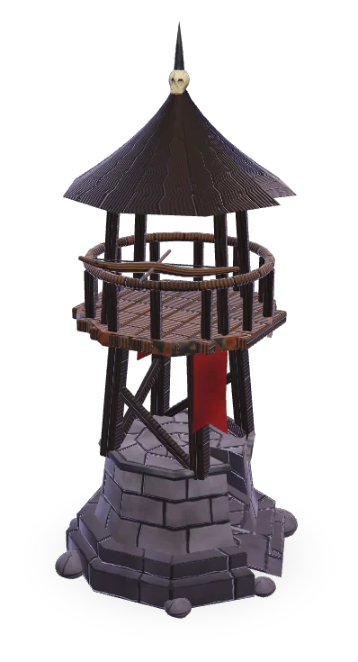
Türme bauen
Über 30 Türme mit eigenen Stärken: Bögen, Frost, Blitz, Feuer, Gift und Arkanes. Wertet sie bis Stufe 4 auf und wähle danach eine Spezialisierung.
Baue Türme, führe deinen Helden durch die Schlacht und halte den Kern – Welle um Welle, so lange du durchhältst.
Kostenlos, ohne Download. Am besten am PC mit Chrome, Edge oder Firefox.
Aus Rissen strömen Gegner auf den Kern deiner Welt zu. Du entscheidest, wo Türme stehen, wann du sie aufwertest und wohin dein Held läuft. Jede Welt wird aus einem Seed neu erschaffen – keine Karte gleicht der anderen.

Über 30 Türme mit eigenen Stärken: Bögen, Frost, Blitz, Feuer, Gift und Arkanes. Wertet sie bis Stufe 4 auf und wähle danach eine Spezialisierung.
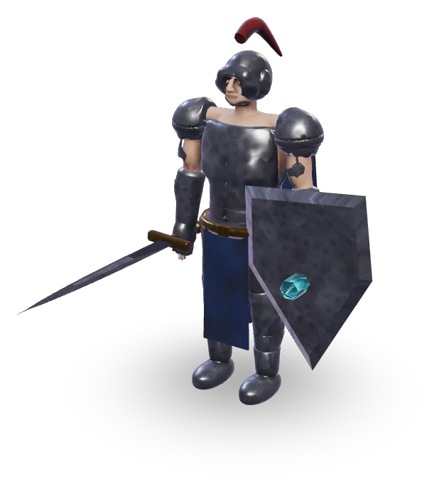
Dein Held führt die Türme um sich herum an und kämpft selbst mit. Klick auf die Karte bewegt ihn, A, S, D und W lösen seine Fähigkeiten aus. Er sammelt Erfahrung, Ausrüstung und Tränke.
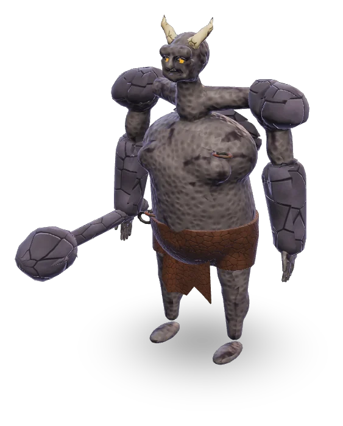
Gemischte Wellen aus Fliegern, Panzern, Schleichern und Schwärmen – und alle paar Wellen ein Boss mit eigenen Angriffen. Wie weit kommst du?
Vier Helden stehen von Anfang an bereit, die übrigen schaltest du mit deiner besten Welle frei. Jeder Held hat einen eigenen Skillbaum und steigt bis Stufe 99 auf.
Verstärkt Türme mit Auren und gezielten Runen. Schwach im direkten Kampf, aber mit klugem Stellungsspiel trägt sie ganze Verteidigungslinien.
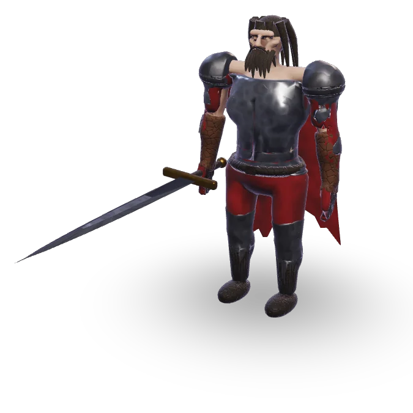
Berserker und Wellenbrecher: hält zwei Gegner im Nahkampf fest, trifft mit jedem Hieb Umstehende und heilt sich durch Treffer.
Die Schildträgerin: hält bis zu vier Gegner fest, verspottet ganze Gruppen und wird mit dem Bollwerk nahezu unverwundbar.
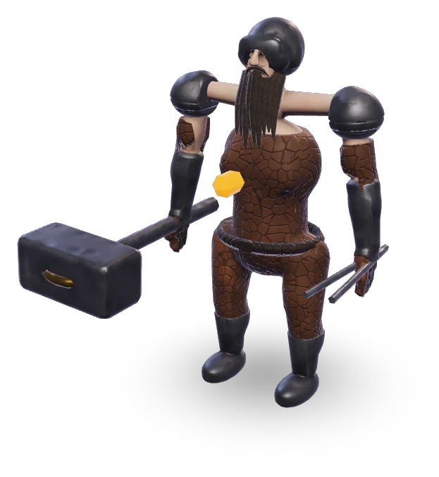
Repariert und verbessert Türme direkt im Feld und haut mit dem Hammer Gegner um.
Türme bleiben das Herz jeder Verteidigung. Dein Held, deine Taktikladungen und deine Doktrin entscheiden, wie viel mehr aus ihnen herauszuholen ist.
Jeder Held stärkt die Türme in drei Feldern um sich – die Türme seiner Art mit vollem Bonus, alle anderen mit einem Viertel. Ein Banner trägt den Befehl an einen zweiten Ort, und das Ultimate ruft alle passenden Türme der Karte zum Sammelruf.
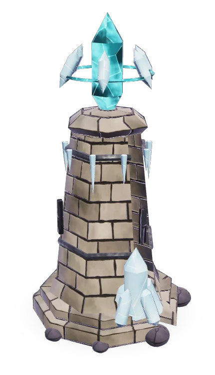
Alle fünf Wellen eine Ladung, höchstens drei auf Vorrat: Überlast, Brennpunkt, Kältewelle oder Schwachstelle. Wer sie für die harten Wellen aufspart, dreht verlorene Kämpfe.
Vor jedem Lauf wählst du eine Spielweise – Baumeister, Feldherr, Taktiker oder Klingenmeister – mit klarem Vorteil und spürbarem Preis. Befehlsrelikte erweitern, welche Türme dein Held anführt.
Stell Türme geschickt nebeneinander: Leylinien verbinden sie zu Netzwerken, Elemente lösen Reaktionen aus, und zwei passende Türme auf Höchststufe verschmelzen zu einem legendären Turm.
Günstiger, schneller Bogenturm. Trifft Boden- und Luftziele.
Sendet Kältewellen aus, die alle Gegner in Reichweite verlangsamen.
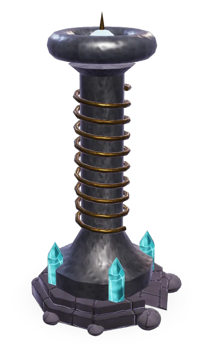
Spannt einen Lichtbogen zu anderen Spulen. Wer ihn kreuzt, wird gegrillt.
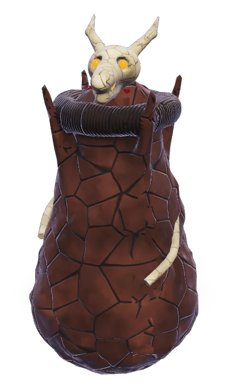
Ein junger Drache speit Feuer – Flieger trifft er zuerst und besonders hart.
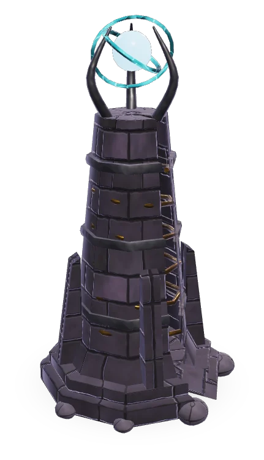
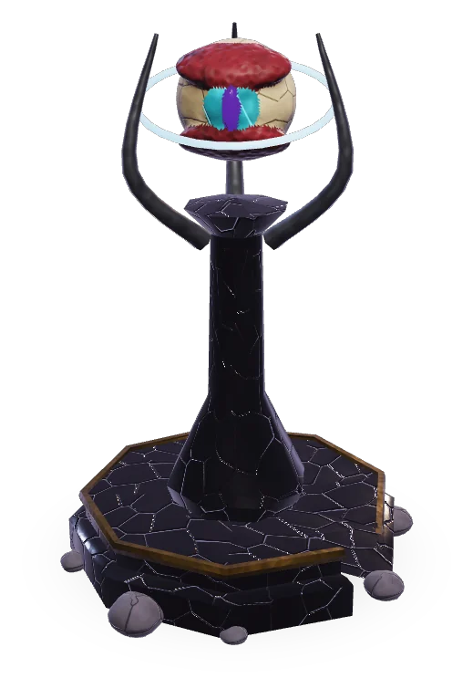
Eisige Kettenblitze springen zwischen Gegnern und verlangsamen sie stark. Klickst du einen Turm an, zeigt dir die Turmleiste, welche Partner zu ihm passen.
Neunzehn Gegnerarten mit eigenen Tricks – Schilde, Regeneration, Tarnung, Brut – und sieben Bosse, die deine Verteidigung auf die Probe stellen.
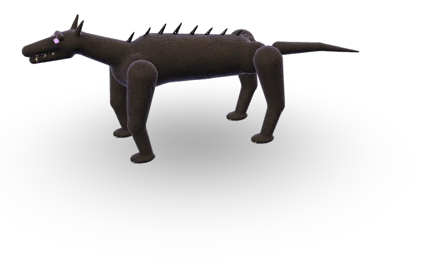
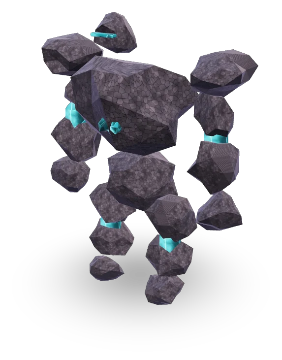
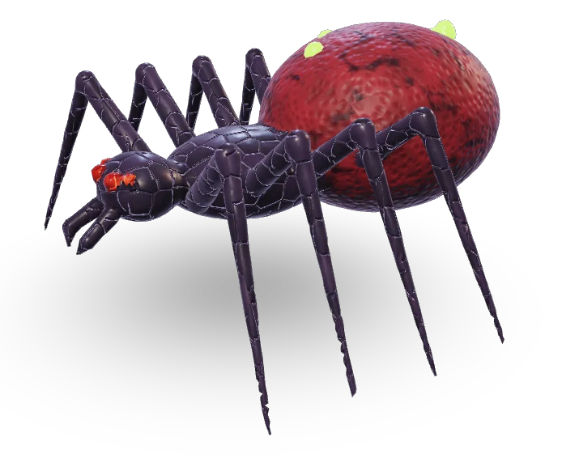
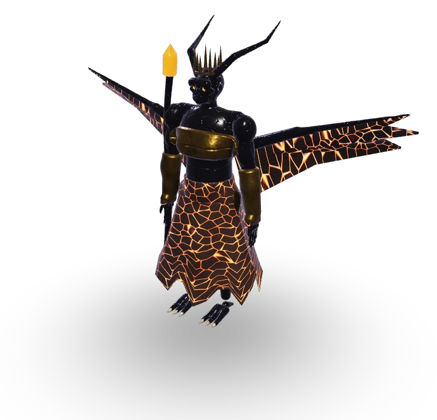
Beschwört Flinklinge und setzt angekündigte Feuerzonen auf deine Turmgruppen. Wer seine Türme zu eng baut, verliert sie.
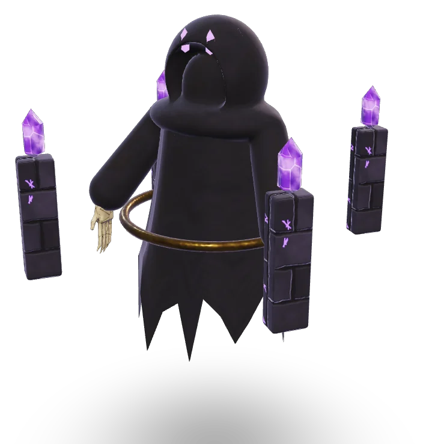
Ein Nullschild schluckt physischen Schaden. Danach stört er Netzwerke mit Nullpulsen und erneuert einmalig seinen Schild.
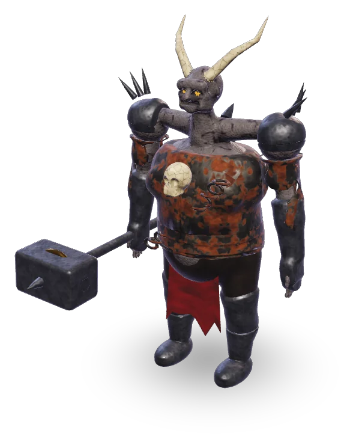
Drei leuchtende Schwachpunkte schützen seinen Kern. Erst wenn sie gebrochen sind, liegt der Kern frei – hoher Einzelschaden ist hier gefragt.
Sieben Biome von Verwunschenem Wald bis Leuchtgrotte, jede Karte mit eigener Stimmung: Morgenrot, Mondnacht oder violetter Dunst.
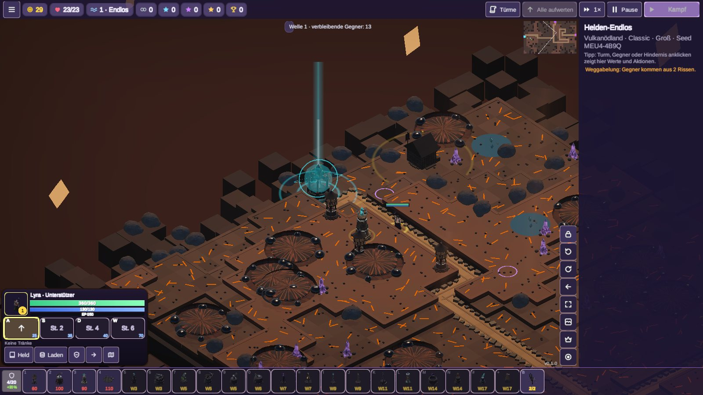
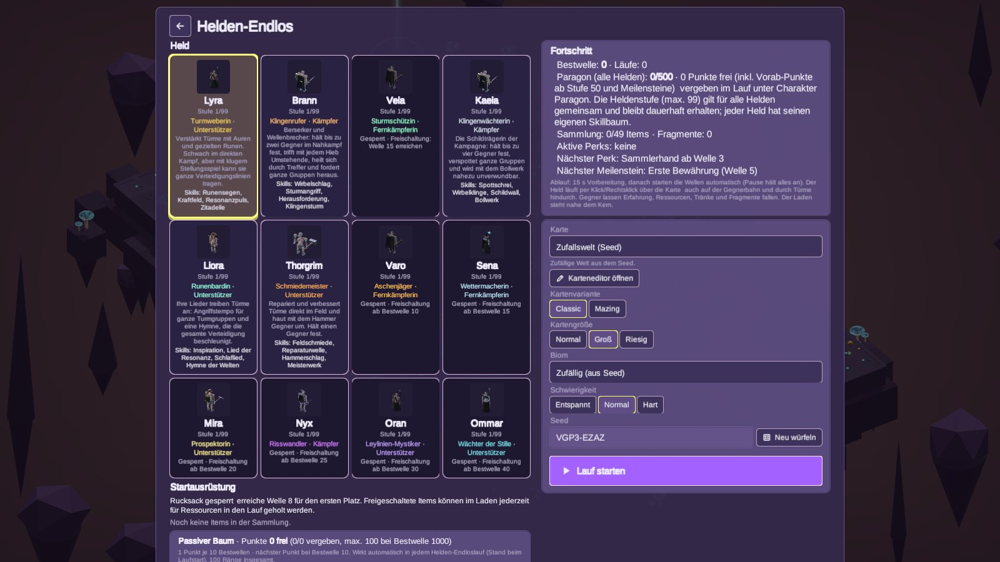
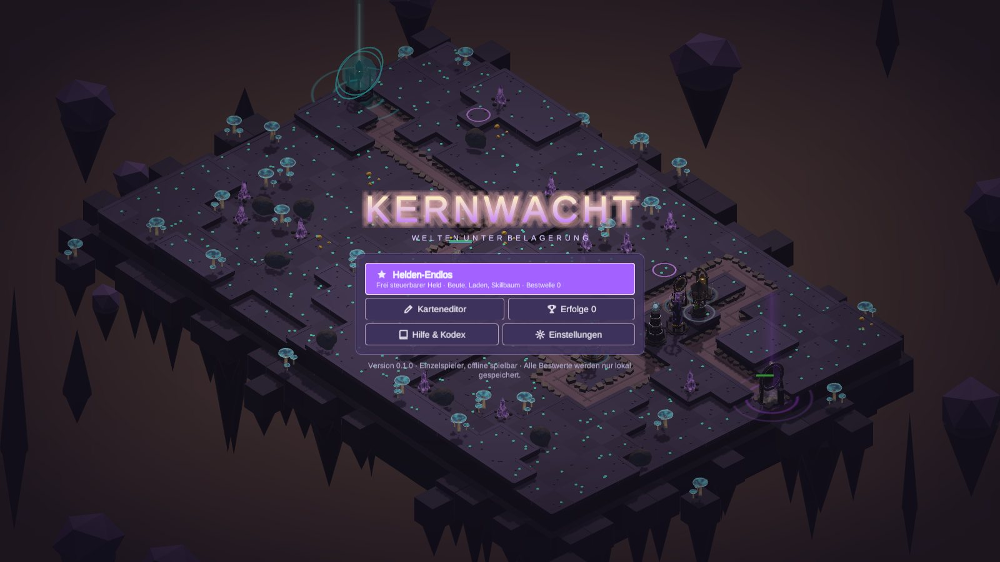
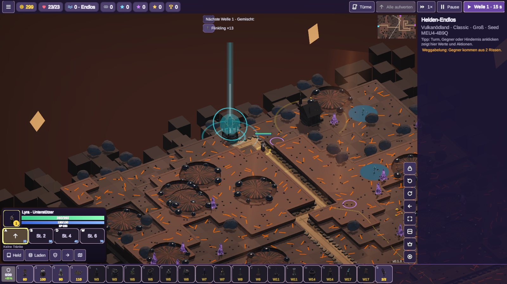
Alle Tasten lassen sich in den Einstellungen umbelegen. Im Spiel erklärt dir ein Hinweisbalken die ersten Schritte.
Ein Klick genügt – das Spiel lädt direkt im Browser.
Jetzt im Browser spielen